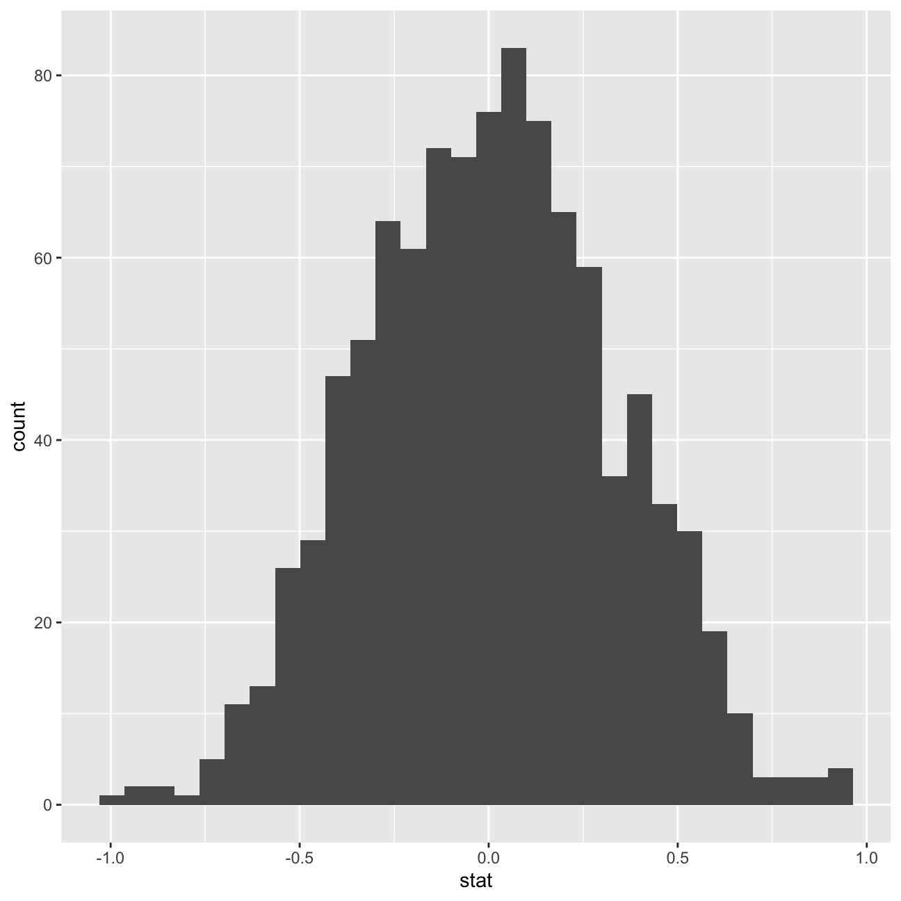
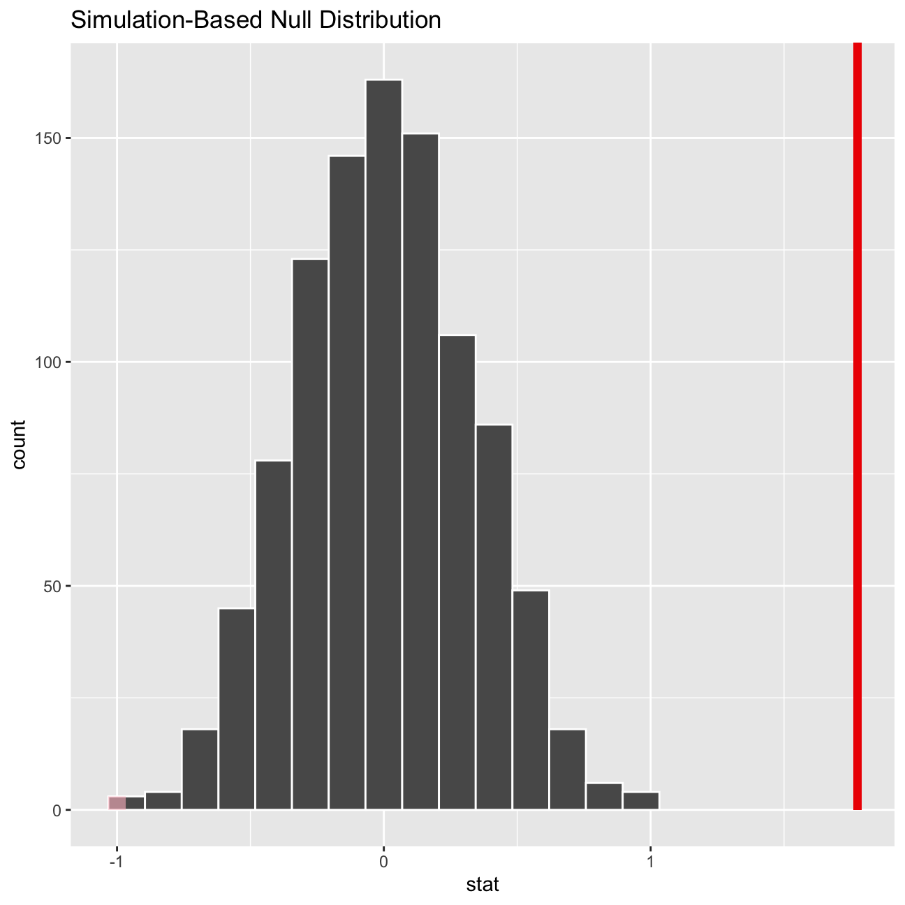

Every two years, the Centers for Disease Control and Prevention conduct the Youth Risk Behavior Surveillance System (YRBSS) survey, where it takes data from high schoolers (9th through 12th grade) to analyze health patterns. We will work with a selected group of variables from a random sample of observations during one of the years the YRBSS was conducted.
This data is part of the openintro textbook and we can load and inspect it. There are observations on 13 different variables, some categorical and some numerical.
# Loading the YRBSS data set
data(yrbss)
# Examining the variables and observations in the data set
glimpse(yrbss)## Rows: 13,583
## Columns: 13
## $ age <int> 14, 14, 15, 15, 15, 15, 15, 14, 15, 15, 15, …
## $ gender <chr> "female", "female", "female", "female", "fem…
## $ grade <chr> "9", "9", "9", "9", "9", "9", "9", "9", "9",…
## $ hispanic <chr> "not", "not", "hispanic", "not", "not", "not…
## $ race <chr> "Black or African American", "Black or Afric…
## $ height <dbl> NA, NA, 1.73, 1.60, 1.50, 1.57, 1.65, 1.88, …
## $ weight <dbl> NA, NA, 84.4, 55.8, 46.7, 67.1, 131.5, 71.2,…
## $ helmet_12m <chr> "never", "never", "never", "never", "did not…
## $ text_while_driving_30d <chr> "0", NA, "30", "0", "did not drive", "did no…
## $ physically_active_7d <int> 4, 2, 7, 0, 2, 1, 4, 4, 5, 0, 0, 0, 4, 7, 7,…
## $ hours_tv_per_school_day <chr> "5+", "5+", "5+", "2", "3", "5+", "5+", "5+"…
## $ strength_training_7d <int> 0, 0, 0, 0, 1, 0, 2, 0, 3, 0, 3, 0, 0, 7, 7,…
## $ school_night_hours_sleep <chr> "8", "6", "<5", "6", "9", "8", "9", "6", "<5…We will first start with analyzing the weight of participants in kilograms. Using visualization and summary statistics, we will describe the distribution of weights.We are missing 1,004 observations for weight in the data set.
yrbss_weights <- yrbss %>%
# Filtering for missing values in 'weight'
filter(!weight %in% NA) %>%
# Generating summary statistics
summarise(mean = mean(weight),
median = median(weight),
max = max(weight),
min = min(weight),
sd = sd(weight))
# Displaying summary statistics
yrbss_weights## # A tibble: 1 x 5
## mean median max min sd
## <dbl> <dbl> <dbl> <dbl> <dbl>
## 1 67.9 64.4 181. 29.9 16.9# Creating distribution histogram
ggplot(yrbss, aes(x = weight)) +
geom_histogram() +
scale_y_continuous(label = comma) +
theme_bw() +
labs(title = "Weighty Children",
subtitle = "Distribution of Weights for American High Schoolers",
x = "Weight (kg)",
y = "Count",
caption = "Source: CDC")Next, we consider the possible relationship between a high schooler’s weight and their physical activity. Plotting the data is a useful first step because it helps us quickly visualize trends, identify strong associations, and develop research questions.
Let’s create a new variable physical_3plus, which will be yes if they are physically active for at least 3 days a week, and no otherwise.
yrbss <- yrbss %>%
# Creating 'physical_3plus' variable and adding it to data set
mutate(physical_3plus = ifelse(physically_active_7d >= 3, "yes", "no"))
yrbss %>%
# Filtering for missing values in 'physical_3plus'
filter(!is.na(physical_3plus)) %>%
# Finding proportion of high schoolers that do and do not get adequate physical activity
group_by(physical_3plus) %>%
summarise(count = n()) %>%
mutate(prop = count / sum(count))## # A tibble: 2 x 3
## physical_3plus count prop
## <chr> <int> <dbl>
## 1 no 4404 0.331
## 2 yes 8906 0.669Here is a 95% confidence interval for the population proportion of high schoolers that are NOT active 3 or more days per week.
# Creating bootstrap simulation to generate confidence interval
weight_ci <- yrbss %>%
specify(response = physical_3plus, success = "no") %>%
generate(reps = 1000, type = "bootstrap") %>%
calculate(stat = "prop") %>%
get_confidence_interval(level = 0.95, type = "percentile")
weight_ci## # A tibble: 1 x 2
## lower_ci upper_ci
## <dbl> <dbl>
## 1 0.323 0.339Below is a boxplot of physical_3plus vs. weight. There appears to be a weak relationship between these two variables. Both medians are around the 60 to 70 kg range and both categories contain a high number of outliers on the higher end. While this is generally not what would be expected from this information, a possible shortcoming is that ‘weight’ captures both fat and muscle, meaning that some of the high-end outliers for the ‘yes’ group could be students that are highly fit and muscular.
# Creating boxplot broken down by 'physical_3plus'
weight_box <- yrbss %>%
filter(!physical_3plus %in% NA) %>%
ggplot(aes(x = weight, y = physical_3plus)) +
geom_boxplot() +
theme_bw() +
labs(title = "Muscle Mass?",
subtitle = "Distribution of Weights for American High Schoolers by Physical Activity",
x = "Weight (kg)",
y = "3+ Hours of Physcical Activity per Day",
caption = "Source: CDC")
weight_boxBoxplots show how the medians of the two distributions compare, but we can also compare the means of the distributions using either a confidence interval or a hypothesis test.
yrbss %>%
group_by(physical_3plus) %>%
filter(!is.na(physical_3plus)) %>%
# Generating summary statistics that will be used to create confidence interval
summarise(mean_weight = mean(weight, na.rm = TRUE),
sd_weight = sd(weight, na.rm=TRUE),
count = n(),
se_weight = sd_weight/sqrt(count),
t_critical = qt(0.975, count-1),
margin_of_error = t_critical * se_weight,
# Creating the confidence interval as the spread bewtween 'lower' and 'upper'
lower = mean_weight - t_critical * se_weight,
upper = mean_weight + t_critical * se_weight)## # A tibble: 2 x 9
## physical_3plus mean_weight sd_weight count se_weight t_critical
## <chr> <dbl> <dbl> <int> <dbl> <dbl>
## 1 no 66.7 17.6 4404 0.266 1.96
## 2 yes 68.4 16.5 8906 0.175 1.96
## # … with 3 more variables: margin_of_error <dbl>, lower <dbl>, upper <dbl>There is an observed difference of about 1.77kg (68.44 - 66.67) and we notice that the two confidence intervals do not overlap. It seems that the difference is at least 95% statistically significant. Let us also conduct a hypothesis test.
The null hypothesis for this test is that the true difference in means is equal to 0 while the alternative hypothesis is that the true difference in means is not equal to 0.
# Conducting the hypothesis test
t.test(weight ~ physical_3plus, data = yrbss)##
## Welch Two Sample t-test
##
## data: weight by physical_3plus
## t = -5, df = 7479, p-value = 9e-08
## alternative hypothesis: true difference in means is not equal to 0
## 95 percent confidence interval:
## -2.42 -1.12
## sample estimates:
## mean in group no mean in group yes
## 66.7 68.4inferNext, we will introduce a new function, hypothesize, that falls into the infer work flow. We will use this method for conducting hypothesis tests. But first, we need to initialize the test, which we will save as obs_diff.
# Initializing the 'hypothesize' test
obs_diff <- yrbss %>%
specify(weight ~ physical_3plus) %>%
calculate(stat = "diff in means", order = c("yes", "no"))After we have initialized the test, we need to simulate the test on the null distribution, which we will save as null.
# Simulating previously initialized test on a null distribution
null_dist <- yrbss %>%
specify(weight ~ physical_3plus) %>%
hypothesize(null = "independence") %>%
generate(reps = 1000, type = "permute") %>%
calculate(stat = "diff in means", order = c("yes", "no"))Here, hypothesize is used to set the null hypothesis as a test for independence, i.e., that there is no difference between the two population means. Also, note that the type argument within generate is set to permute, which is the argument when generating a null distribution for a hypothesis test.
We can visualize this null distribution with the following code:
# Visualizing the null distribution
ggplot(data = null_dist, aes(x = stat)) +
geom_histogram()
We can also calculate the p-value for our hypothesis test using the function infer::get_p_value().
# Generating visualization of location of p-value
null_dist %>% visualize() +
shade_p_value(obs_stat = obs_diff, direction = "two-sided")
# Calculating p-value
null_dist %>%
get_p_value(obs_stat = obs_diff, direction = "two_sided")## # A tibble: 1 x 1
## p_value
## <dbl>
## 1 0This the standard work flow for performing hypothesis tests.